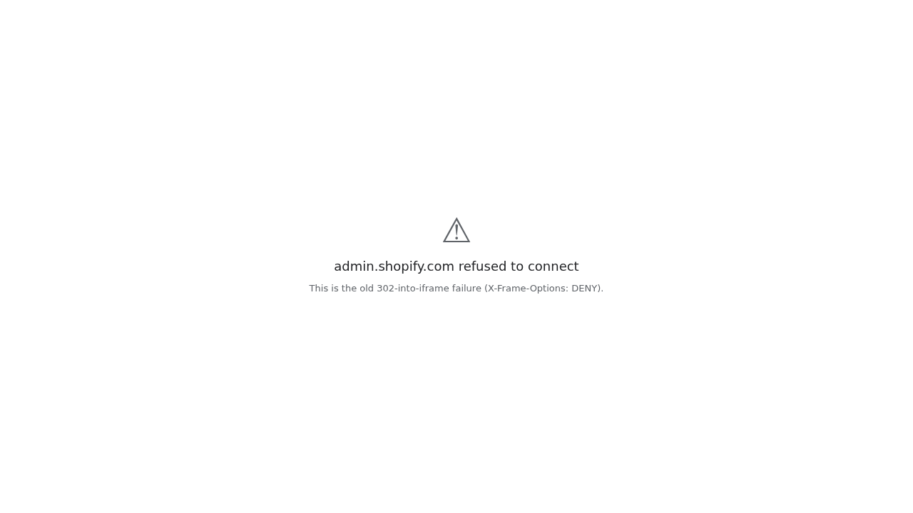
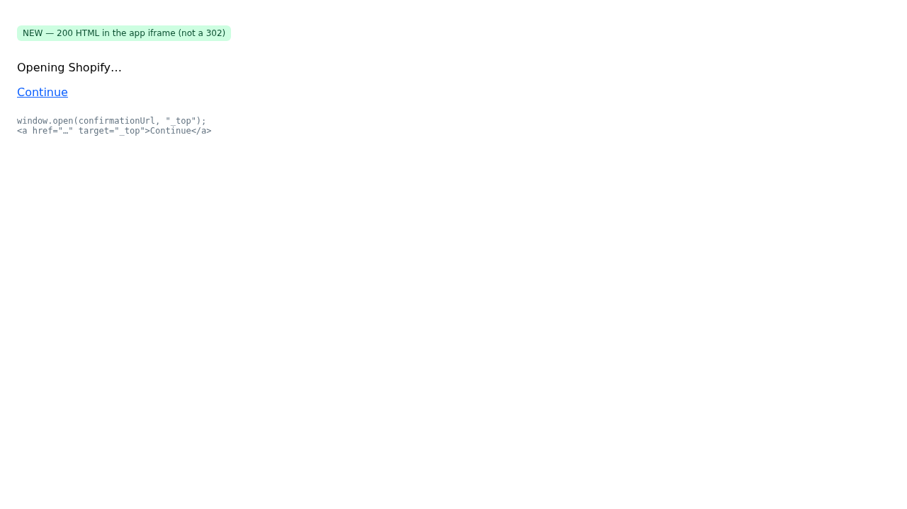
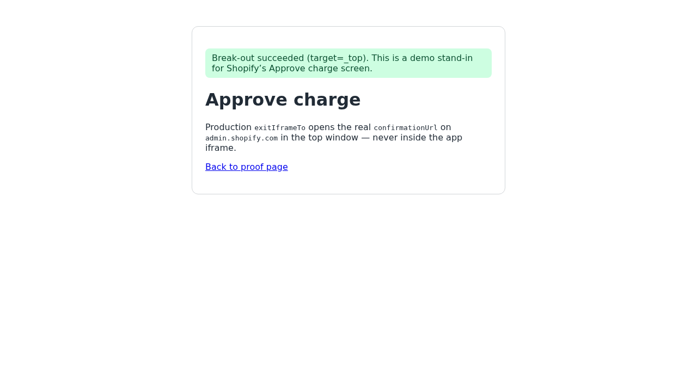
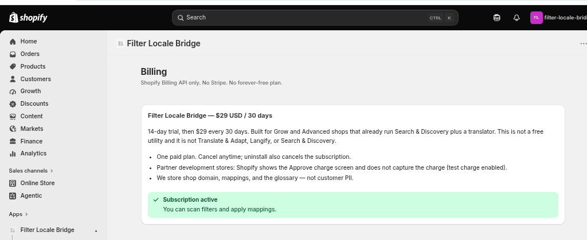
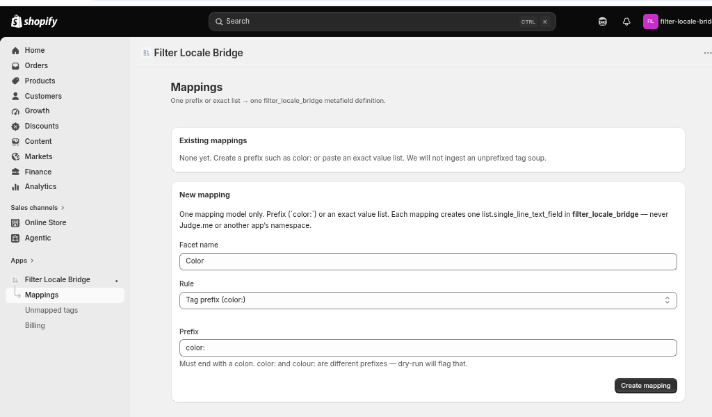
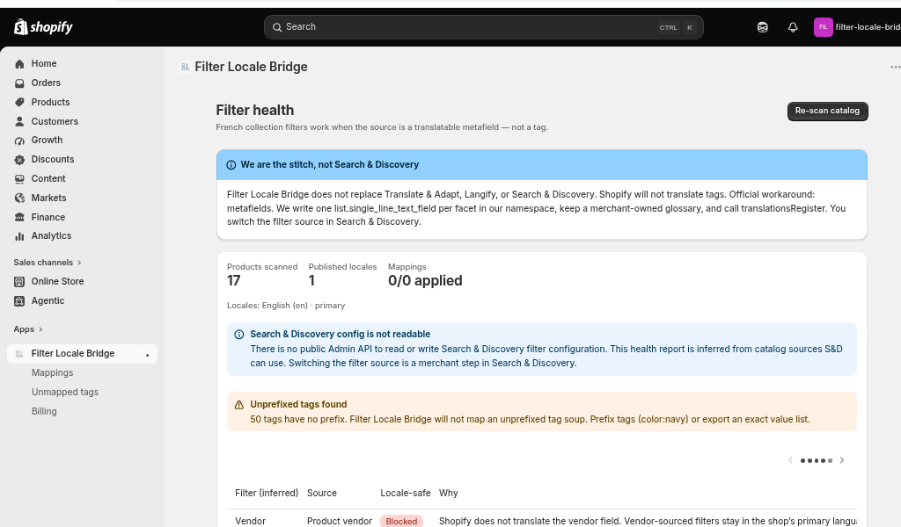

Paste this URL into Partner review items 2.1.3 UI, 1.2.2 Billing API, and 2.1.1 critical errors.
Embedded Continue to Shopify Approve charge (and any other
admin.shopify.com handoff) issued a 302 into the app iframe.
Admin sends X-Frame-Options: DENY, so the iframe showed
“admin.shopify.com refused to connect”. Same class of failure on Billing / Mappings
when in-app links dropped shop / host / embedded.
window.open(url, "_top") (never a 302 to Admin inside the iframe).returnUrl is the Admin re-embed URL so the merchant lands back in the iframe after Approve.shop, host, embedded, id_token.deployment-01M1JEA6V89CF8Q0TSAP117RK3 (Thu 3 Sep 2026 02:32 BST; includes the handoff fix).Left is the old 302 (the Partner screenshot). Right is the HTML Fly now returns instead.
Demo Continue opens a stand-in Approve page on this origin so the proof stays here.
Production uses the real Shopify confirmationUrl and always auto-runs
window.open(confirmationUrl, "_top").
Before — admin.shopify.com refused to connect when Approve charge 302'd into the iframe.

After — 200 HTML with Opening Shopify… and Continue target=_top.

Break-out stand-in (Continue target=_top lands here in the demo):

Billing page, Approve-charge path without refused-to-connect, Mappings still embedded.
Store filter-locale-bridge-dev.myshopify.com — app loaded inside Shopify admin, not as a top-level Fly page.
Billing — $29 / 30 days, Shopify Billing API, no refused-to-connect chrome.

Mappings — mappings list / new mapping form still inside the admin iframe.

Filter health (embedded):

<head>)/webhooks/shop/redact without signature → 401 Unauthorized